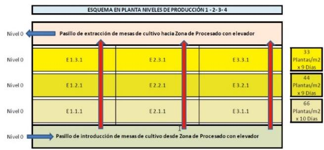

Desarrollo de una
unidad automatizada
para la producción
sostenible de vegetales
de alta calidad

Sobre EDEN
Qué es EDEN
EDEN es un sistema avanzado de producción vertical automatizada diseñado para optimizar el cultivo de vegetales de alta calidad, integrando tecnologías punteras para garantizar la eficiencia, sostenibilidad y escalabilidad de la producción.
Tecnologías base
El proyecto combina herramientas de Industria 4.0, Internet de las Cosas (IoT), Inteligencia Artificial (IA) y robótica, permitiendo un control total del entorno de cultivo y una gestión automatizada de los recursos para maximizar el rendimiento.
Objetivos
- Optimizar la producción agrícola mediante un sistema de cultivo vertical inteligente y automatizado.
- Reducir el consumo de agua, energía y fertilizantes, minimizando el impacto ambiental.
- Implementar un control de precisión sobre las variables clave del cultivo: luz, humedad, temperatura y nutrientes.
- Automatizar el manejo del cultivo con tecnologías de robotización avanzada.
- Favorecer la producción sostenible y local de alimentos, mejorando la seguridad alimentaria.

Ecosistema técnico
- Monitorización en tiempo real mediante sensórica IoT.
- Gestión autónoma del riego y la nutrición basada en IA.
- Automatización del entorno de cultivo con climatización, iluminación LED y control de CO₂.
- Plataforma de control inteligente basada en Edge Computing y Cloud Computing.
- Aplicación de robótica agrícola para siembra, mantenimiento y cosecha.
Impacto y propuesta de valor
Eficiencia de recursos
Optimiza el uso de agua, energía y fertilizantes mediante control de precisión y estrategias de recirculación, reduciendo costes e impacto ambiental.
Automatización integral
Integra monitorización, riego, nutrición, clima e iluminación en una operativa coordinada con IA y robótica para maximizar el rendimiento productivo.
Escalabilidad del modelo
Se diseña como unidad modular adaptable a distintos tamaños de operación, facilitando replicación, despliegue progresivo y crecimiento sostenible.
Sostenibilidad y seguridad alimentaria
Impulsa producción local en ambiente controlado, más resiliente y trazable, contribuyendo a una oferta de alimentos de alta calidad durante todo el año.